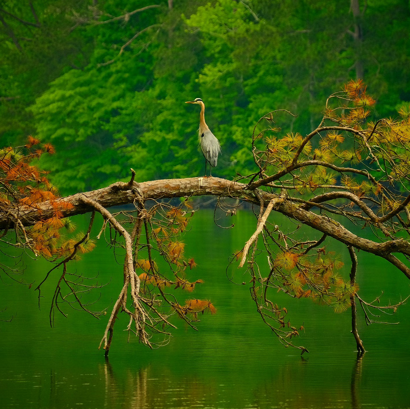

Perched upon the skeletal remains of a fallen pine, a Great Blue Heron stands in motionless vigil over the emerald waters of Lake Purdy. In this quiet corner of Central Alabama, the bird is a master of patience, waiting for the slight ripple of a bluegill or shad to break the surface.
The frame captures the stark contrast between the weathered orange needles of the dying timber and the vibrant, lush secondary growth of the shoreline forest beyond.